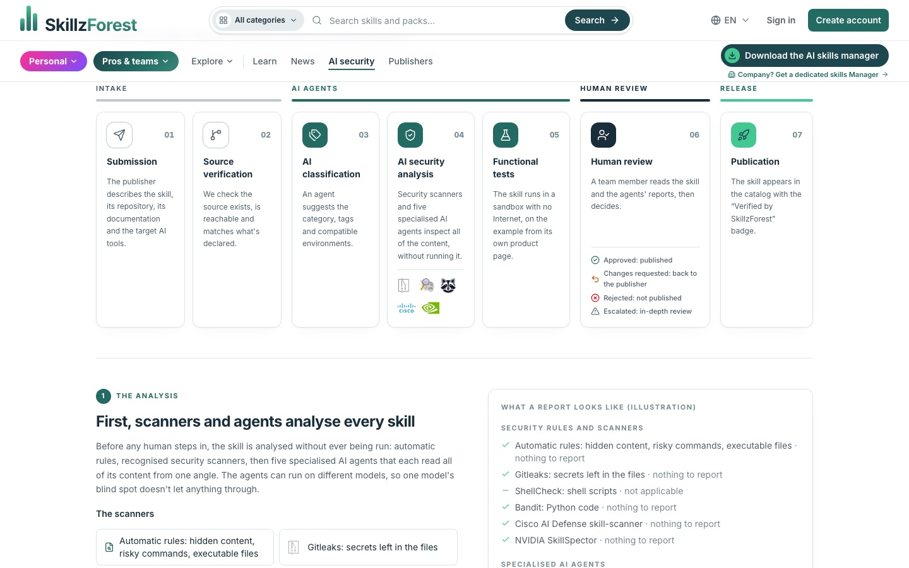
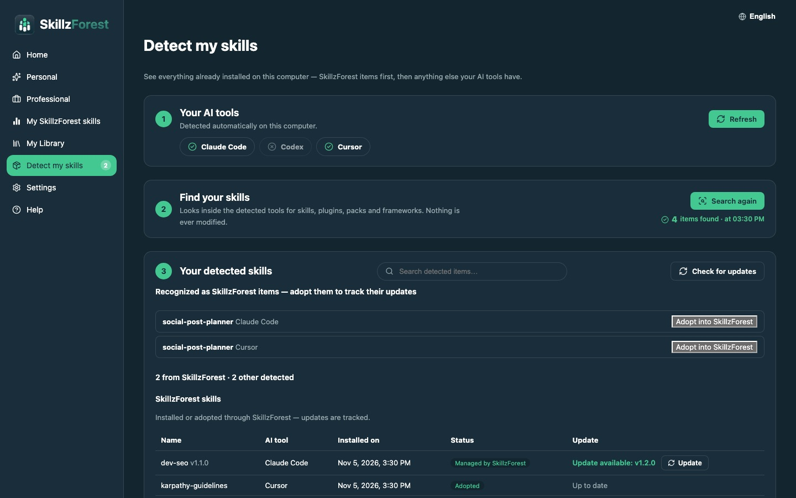
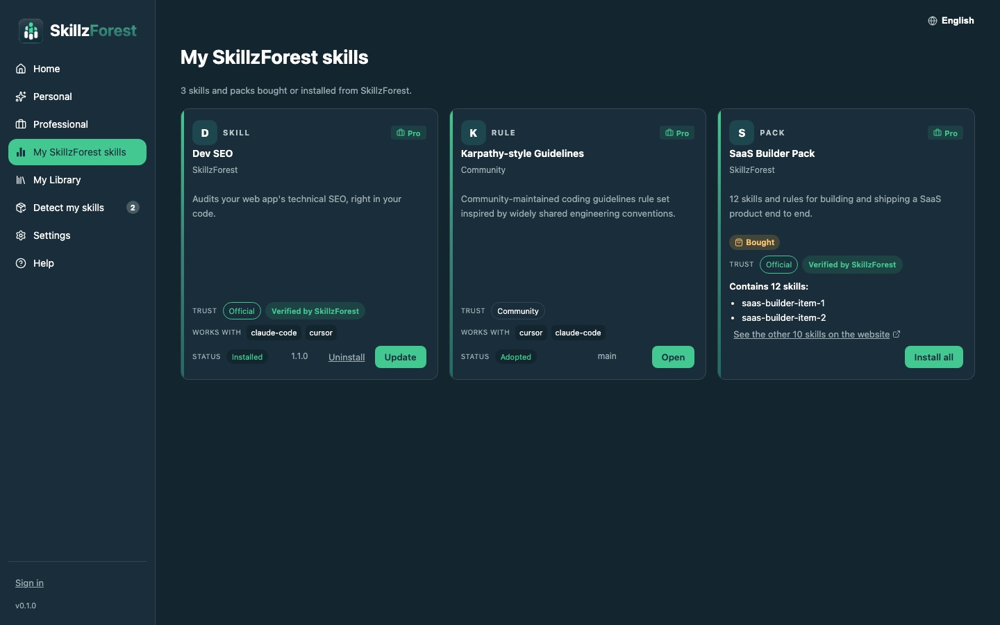

SKILLZFOREST // ARCHITECTURE
A decoupled platform: one API that only keeps state, a website, a desktop app that does the installing, and AI workers outside the API that review skills and make videos — orchestrated by n8n, traced in Langfuse. An MCP gateway is being designed on the same edge.
Five pieces, one rule each
Each piece has one job and talks to the others only through HTTP contracts. The API never executes anything: it doesn't run a skill, call an LLM for a catalog item, read user code or touch a filesystem. That is what keeps it small, testable and safe to expose.
Who owns what
| Piece | Owns | Never does |
|---|---|---|
| API (FastAPI) | Catalog, accounts, commerce, installation state, job queues | Execute a skill, call an LLM for an item, touch a disk |
| APISIX | Rate limits, CORS, IP/geo rules, request IDs, logs | Any business decision (auth, entitlements stay in FastAPI) |
| Website | Discovery, search, trust pages, checkout, publisher flow, back office | Install anything locally |
| Manager | Runtime detection, install / update / uninstall, local inventory, device sync | Payments, a second marketplace |
| Workers | Reviews, conversions, videos — pulled as jobs | Hold state: the API stays the source of truth |
Design decisions
Skill, rule, pack, workflow, plugin, framework, MCP server and tool differ only by
type. Packs and workflows are edges in a relation table, never copies.
GET /me/library is computed live from entitlements, so it can never drift.
Owning a pack grants its items dynamically.
The Manager is the truth about the disk; the API only stores its last report and
reconciles statuses (installed, outdated, missing…).
Supabase for personal accounts, Keycloak organizations for enterprise SSO. The API routes
each token by its iss and provisions users on first call.
Typesense on the internal network for typo-tolerant, as-you-type search; Postgres stays the source for plain browsing. The browser never talks to Typesense.
The website and the Manager both run on fixtures with no backend
(npm run dev:mock), so UI work never waits on the API.
Where LLMs are used — and where they are not
LLMs do the reading and judging no human could do at scale. Deterministic code keeps the last word on safety: no agent can lower a verdict set by a rule or a scanner, and nothing goes live without an admin.
Prompt injection, exfiltration, persistence & tampering, supply chain, intent (does it do what the page promises?). One subject each, run side by side on the whole skill.
claude -p "<example prompt>" with the skill installed, in a sandbox: the
product page's own example is actually run.
Did the run use the skill, finish, match the page? Then a judge writes the synthesis for the moderator — it can only make the verdict stricter.
Claude Code writes the texts of a Remotion template (checked against its zod schema), or a whole custom composition, then renders FR and EN.
SkillzForest's own skf-seo-* skills audit the site and plan articles. An articles
agent has a dedicated token: it writes drafts, never publishes or deletes.
An agent suggests the category, tags and compatible environments of a submitted skill; a person confirms.
The review chain
Prompts as versioned assets
review/auditor-intent,
review/judge…). A version is tried under the staging label, promoted to
production, then pulled back into prompts/*.md. If Langfuse is down, the
runner falls back to the files.ruleset id. When it changes, live skills reviewed under the old one are
re-reviewed — and taken down if they now fail.In Langfuse


n8n decides the order, the runners do the work
The runners keep no schedule of their own. Every chain — what runs, in which order, when a human must approve, who is alerted — lives in n8n, where each review is an execution you can open node by node and change without redeploying code. The API only fires webhooks and receives results.
Drives the runner stage by stage (claim → A → gate → C → D), asks for approval by email when needed, emails the report, converts a pass/warn for every tool, re-queues from a form, drains the queue if a webhook was missed.
Reads the runner's current ruleset and re-queues every live skill reviewed under another one or over 30 days ago (50 per sweep). Skips the sweep if Langfuse is down.
Any n8n error, runner down / back, jobs queued > 30 min or running > 60 min, and the daily LLM spend read from Langfuse over budget.
One click in the back office: n8n starts the video runner, waits (40 min max), puts the video on the product page, and keeps one Discord message per video updated at each step.
Human in the loop, by design
pass only moves an item to automated; verified stays a human decision.Product video pipeline
In n8n

Running an untrusted skill safely
A skill is instructions an agent executes with access to files, a shell and keys. Stage C runs it for real — so the run happens where it can't reach anything, and where every attempt to get out is recorded as evidence.
Verdict rules
| Finding | Verdict | Why |
|---|---|---|
| Any critical | fail | Canary leaked, home secrets read, blocked pattern |
| High from a rule, gitleaks or bandit | fail | Deterministic tools rarely misfire |
| High from an LLM or a pattern scanner | warn | Pattern matches over prose misfire more often |
| Medium, or no / failed functional test | warn | A human looks closer |
| The judge's opinion | stricter only | An agent can never lower the floor |
Stage 0 never unpacks the archive on the host: it inspects it in memory; the
scanners (gitleaks, shellcheck, bandit, Cisco AI Defense skill-scanner, NVIDIA SkillSpector) run in their
own container with --network none and pinned versions.
Made public on the site

One skill, every tool
A skill is written once, with a runtime-agnostic id. Distributions per tool are generated, never hand-maintained.
.claude/skills/, Cursor, Codex, Copilot, Gemini CLI, a root SKILL.md…) and its
frontmatter is checked against the open Agent Skills standard.fail blocks the file, and takes down a
file that was live.native / converted / partial /
unsupported.Inside the Manager
A Tauri 2 app: React never touches the filesystem, the keychain or the network layer that installs.
Every sensitive operation is a Rust command. A website link skillzforest://install/{slug}
opens it — and it never installs without the user confirming.
Finds the AI tools on the computer and the skills already installed by hand; recognised ones can be adopted so their updates are tracked. Nothing is ever modified during a scan.
Every local feature works without an account. Signing in (PKCE code hand-off from the website, or Keycloak for a work account) only adds ownership data.
Conflicts detected, nothing overwritten silently, logs redacted, tokens in the OS keychain, releases signed and published from tags. CI builds macOS, Windows and Linux.


The catalog, inside the AI assistant
Users already live in Claude, Codex or Cursor. The goal is to let those assistants reach SkillzForest
directly through the Model Context Protocol, on mcp.skillzforest.com — with the same
protections as the REST API, but its own policy.
What is already in place
mcp.skillzforest.com /
mcp.localhost, disabled on purpose: no fake MCP behind it.skillzforest-mcp service in the Docker Compose file,
on the same internal network.RATE_LIMIT_MCP defined but not wired: the MCP layer will never be
forced to share the REST tiers. Whether its transport needs browser CORS is an open decision.mcp_server is already one of the 8 catalog types: SkillzForest
distributes MCP servers like skills, and the Manager installs them.The same pattern is already in production on LIKYLY, where an MCP server lets the developer's coding assistant configure and integrate the product.
Repositories
| Repo | Role | Technology |
|---|---|---|
| skillzforest-api | State, catalog, commerce, jobs, gateway | Python 3.12, FastAPI, Pydantic v2, SQLAlchemy 2 async, Alembic, PostgreSQL, Typesense, APISIX, Keycloak, Stripe, Hoppscotch |
| skillzforest-website | Marketplace, trust pages, back office | Next.js 16 App Router, React 19, TypeScript, Tailwind v4, Radix UI, next-intl (FR/EN), Supabase Auth, Turnstile, MDX, Vitest, Playwright |
| skillzforest-manager | Desktop install & inventory | Tauri 2, Rust, React, TypeScript, Vite, SQLite, OS keychain, signed updates |
| skillzforest-reviewer | AI review runner + n8n workflows | Python, Anthropic SDK (any provider / Ollama), Docker sandbox, gitleaks, shellcheck, bandit, Cisco & NVIDIA skill scanners, n8n, Langfuse |
| skillzforest-video | Videos in code + video runner | Remotion 4, React, zod, Claude Code headless |
| skillzforest-skills | The skills factory (public) | 26 skills, 6 packs, JSON Schemas, build scripts per runtime |
Quality
The API's test suite runs on in-memory SQLite with pytest; the gateway has its own lint and end-to-end
checks (make gateway-validate, make gateway-test). The website has unit tests and
Playwright end-to-end tests; the Manager has Vitest on the front and cargo test on the Rust
side, with a CI compile check on macOS, Windows and Linux. The reviewer is tuned on local files before it
ever touches the queue.